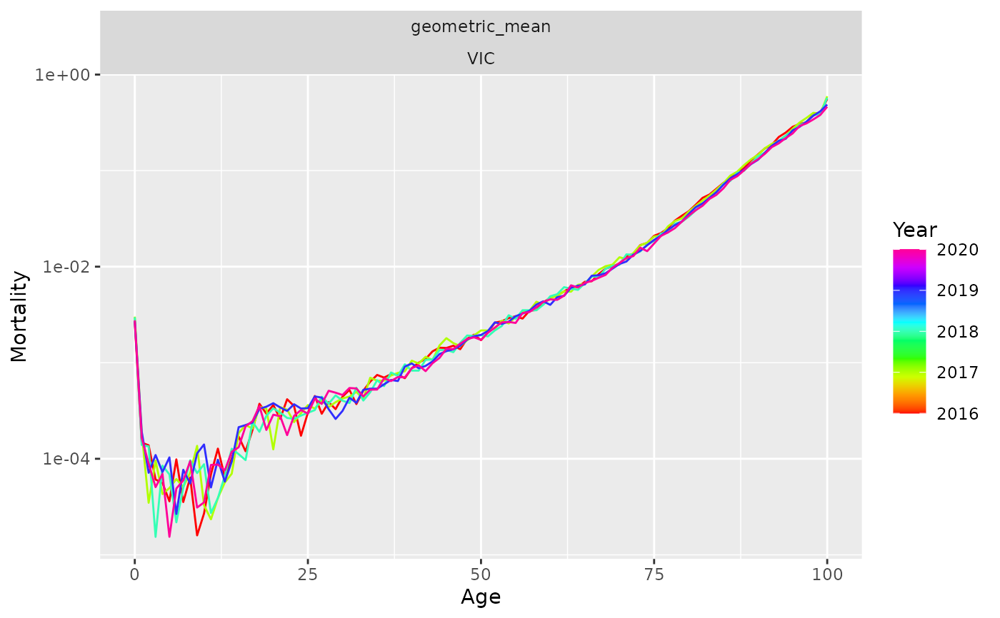

Make a new vital containing products and ratios of a measured variable by a key variable. The most common use case of this function is for mortality rates by sex. That is, we want to compute the geometric mean of age-specific mortality rates, along with the ratio of mortality to the geometric mean for each sex. The latter are equal to the male/female and female/male ratios of mortality rates.
Details
When a measured variable takes value 0, it is set to 10^-6 to avoid infinite values in the ratio.
References
Hyndman, R.J., Booth, H., & Yasmeen, F. (2013). Coherent mortality forecasting: the product-ratio method with functional time series models. Demography, 50(1), 261-283.
Examples
pr <- aus_mortality |>
dplyr::filter(Year > 2015, Sex != "total") |>
make_pr(Mortality)
pr |>
dplyr::filter(Sex == "geometric_mean", Code == "VIC") |>
autoplot(Mortality) +
ggplot2::scale_y_log10()
